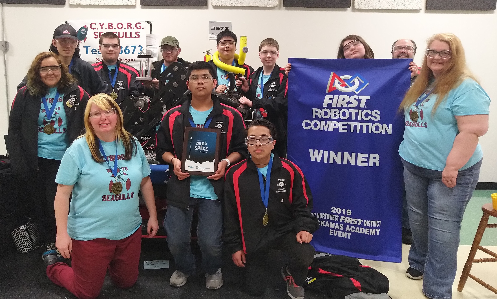

| Home | Photos | Team | News | History | Contact |
With a month left before kick off we are hard at work getting our robot room setup for a fresh build season and a new competition!

The Seaside High School CYBORG Seagulls Robotics team, along with its two ally teams, CloverBots of CAM Academy in Battle Ground WA and the Generals from Grant High School in Portland, placed first at the FIRST Clackamas Academy Event held in Oregon City. Astoria High School’s River Bots team allied with the Flying Hedgehogs from Beaverton School of Science & Technology and Bearcat Robotics from W.F. West High School in Chehalis WA
placed second at that tournament. Teams from all over Washington, Oregon, and a team from Alaska competed in the FIRST Robotics event. The tournament acted as a qualifying opportunity for teams in preparation for the District Championships, to be held at the Tacoma Convention Center, April 3-6, 2019. The Seaside High School CYBORGs don’t know yet if they will be attending as points are given throughout the season for high placing. According to the Seaside CYBORGs coach Toni Vandershule, there are 151 teams total in the District that encompasses Washington and Oregon. “There’s no magic number,” explained Vandershule, “but usually the teams with 50 ranking points and above during the season get to go to Districts.”
Currently the Seaside CYBORGS team is ranked 26th out of the 151 teams – Astoria is currently ranked eighth. “We didn’t do as well during the first competition this season,” said Vandershule. “In the first tournament, we were still working out the ball pickup mechanism, and so it wasn’t until the end of the tournament that we actually got it right.”
Every year FIRST Robotics has a different theme – This year, it was Deep Space. Vandershule explained that the goal of the robots was to put “hatch panels on a rocket ship and put cargo in the hold.” The hatch panels were actually discs with Velcro on them and a hole in the middle so robots could grab them and place them over the cargo hatch holes – the cargo looked like a playground ball – pick it up and place them in the cargo hole.
And, instead of the typical autonomous action at the beginning of the round, students had to pretend there was a sandstorm so that they couldn’t see their robots. Tournament sponsors covered the viewing area for the student robot drivers, so that they had to view and drive the robots by video camera only. Seaside driver Jonathon Krizo said said driving by video was challenging. “The view was slightly delayed by a couple seconds, so you couldn’t see in real time.” Students on the team fill a variety of roles. Seaside runner Jonathon Granillo supported Krizo during the round. “I was sometimes helping Jonathon to give him suggestions about where to go on the field,” said Granillo. “Othertimes I was the runner back and forth between the pits and the field.”
One of the hallmarks of FIRST Robotics competition is that teams form and reform alliances with two other teams throughout the round robin competition. During the final round of competition, the top 10 teams each choose their two alliance partners. “At the Clackamas tournament we were recruited by Cloverbots to just do defense in the final round because our robot had demonstrated the ability to block using what was called ‘tap and go,’” said Vandershule. This skill came in handy for Seaside in the final seconds of the final round when they knocked the Astoria robot out of commission just as Astoria was going in for the final point. The Seaside/Cloverbots/Generals won the Astoria/Bearcats/ Flying Hedgehogs alliance and the tournament by one point. Seaside Cyborg teammember Lea Stich, said she was surprised by the final round. “I thought we were going to get a red card, but the Astoria robot was already tipping over, and the judges didn’t think that it was something worth a red card.” Vandershule added that Jack Walker, the Programming Mentor for the team, is also the Programming Mentor for the Astoria team. “When he found out that both his teams were in the final round, he stood right in the middle of the sidelines, “she said. “He was wearing both an Astoria t-shirt and a Seaside jacket and cheered for both teams.”
Another hallmark of FIRST Robotics is the idea of Gracious Professionalism which encourages doing high-quality work, recognizing the value of others, and respecting individuals and the community. Gracious Professionalism values fierce competition AND, mutual gain. Thus at Robotics competitions, teams look for ways to support each other. The Seaside team was surprised that the Shockwave team of Glencoe High School, gave Seaside the “Stellar Defense” award based on their performance in the tournament overall. Krizo and Stich said they appreciated the award. “We were really thankful, and we took a photo with them.”
In the meantime, Vandershule and the students are gearing up for the next competition, and they are crossing their fingers, waiting for an email on March 26, 2019.
Saturday, December 17th, The CYBORG Seagulls are hosting a banquet dinner at the Pacific Grange in Warrenton. The goal of this dinner is to gain community support and awareness of our team, along with showing returning community members what we have done over this past year, and what we plan to do this year. This coming season shows great promise for our team, with new members, new ideas, and lots of new projects, we hope we can do better than we have in years past.
We've gone farther than ever before this year, earning a second place medal at Wilsonville (Competition Videos, search for 3673!) and a third placing in Oregon City (Videos). We'd like to thank everyone who had a hand in making this our best season ever. Our team, sponsors, mentors, alliances, and many more. Next year we'll do even better, and go even farther!
We have gotten our task, (YouTube link here: FIRST Robotics 2016 Game Reveal), and we are eager to compete in the FIRST Stronghold challenge! In this challenge we will have some fun storming the castle! Not only will we have our magnificent team, but we will be joined by two other teams in this venture. We all must cross difficult obstacles in our journey to the other team's castle, (fortunately no ROUS), both with our teams at the wheel, and the robots by themselves in autonomous mode. Not only that, but we must shoot the enemy to earn points and weaken their defenses. It seems like a daunting task, but we know we can do it, just like we know the average weight of an unladen swallow and how we know the Earth to be banana-shaped. Our glorious invention will storm the opposite team's castle and destroy it in the name of science!